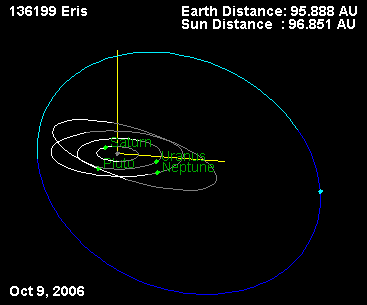

2016.01.24 公開
2026.10.24 移転
- 本の感想 -
『冥王星を殺したのは私です』 マイク・ブラウン

あらすじ
冥王星の外側に第10惑星を発見し、そしてその星を道連れに、冥王星を惑星の座から引きずり落とした科学者の話。
感想
コペルニクスがもたらした世界の改変が、一体どれほどのものだったか……今じゃ想像もできないけれど、たしかにこの瞬間もそれは続いている。
といっても、宇宙はこれまで通り、法則に従って粛々と運動を続けるだけだ。なんにも変わってない。
世界が変わるというのは、私たちのものの見方、捉え方が変わるからだ。
第２章「惑星、その発見と修正の歴史」を読むと、それが実感できる。
闇の中を進む私たちは、何かを発見するたびに手持ちの地図を描き直していく。
新たな目的地へ、まっすぐ船が漕ぎ出せるように。
「惑星」ってなんなんだ？という議論と、それにともなう冥王星の運命も、その「地図の更新作業」にあたる出来事だったようだ。
地図の大改定
冥王星が惑星じゃなくなるというのは、いわば地図の大改定だった。
今まで使ってきた地図は「特徴を押さえていてわかりやすい！」と評判で、あまりに多くの人が参考にし、馴染み深いものだったので、更新は慎重にならざるをえない。
だが、これは地図なのだから、正確にその場所を捉えたものでなければならない。
地図には「水金地火木土天海冥」９つの特徴点があり、冥王星はそのひとつに数えられていた。
だけど、仲間はずれだった。
軌道がやけに楕円で軌道面が傾いてるし、小さいし。
すると1996年、海王星以遠に小天体帯（カイパーベルト）が見つかり、一帯で次々と天体が発見される。その数、1999年末時点で500近く。
冥王星は仲間はずれじゃなかった。
それどころか、仲間がたくさんいたのだ！
著者マイク・ブラウンは太陽系外縁で天体クワオアー、セドナ、ハウメア、マケマケを発見。
さらに、冥王星よりも大きな！エリスを発見する。これが冒頭に出てきた、幻の第10惑星だ。

エリスの軌道（Wikimedia Commons／パブリックドメイン）
仲間がたくさんいるのなら、それは際立った「特徴」ではなくなる。
「冥王星を惑星に含めたままでいいのか？」
「冥王星が惑星なら、他にも惑星になるべき天体があるのでは？」
議論は白熱し、そして結果……
「冥王星は死にました」
冥王星は、惑星の座を奪われた。
それを「死んだ」と表現するのなら、冥府の王らしく死の国に帰った、とも言えるのかもしれない。
「私が殺した」と犯人？を自認する著者だが、冥王星を追い落とさなければ、「第10惑星の発見者」という大きな名誉を得られていた訳で。
ここにはものすごい葛藤があっただろうと想像できる。
これからも変わっていく
最後の方で著者は「水、金、地、火星も惑星には入らない」という説を披露する。
地球型惑星（水金地火）と巨大惑星（木土天海）は根本的な違いがあるのだそうだ。
ええ……？
地球が惑星から外れるなんて日が、やってくるのだろうか？
わからないけれど、そんな日が来てしまったら、人は自分たちのすみかである地球をひいきしたい気持ちと、宇宙の広大なスケールでものを見ることの、妥協点を探しに行くのかもしれない。
メモ
- 惑星発見が、いかに根気のいる地道な作業の積み重ねから成るか。
- 発見と公表のジレンマ。科学者の真摯な気持ち。
「一般の人たちが太陽系の不思議に興味を深めてもらう機会が失われた。メディアに向けて話ができる機会は１回である」
この本も同じ志で書かれたものと感じる。
キャッチーでわかりやすく、一般の人がより興味を持ってくれるように。 - 15歳の時に見つけた、20年に１度の木星と土星のダンス。次は2020年。
- 第８惑星ケレス～第11惑星の顛末。初めて知った！
- 発見した天体につけるニックネームと、正式名の由来。
特に、論争の引き金になった星が、争いの女神「エリス」ってのはすごい偶然だなあ。 - 研究・調査が盗まれる。こんなことがあるんだな……
- 赤ちゃんの超音波写真＝金星のカラー写真
- ガリレオのアナグラム
日本語の解説：That figures.:Mars attacks ! - livedoor BlogGalileo used
smaismrmilmepoetaleumibunenugttauiras
for Altissimum planetam tergeminum observavi
("I have observed the most distant planet to have a triple form")
for discovering the rings of Saturn in 1610.Galileo announced his discovery that Venus had phases like the Moon in the form
Wikipedia - Anagram
"Haec immatura a me iam frustra leguntur -oy"
(Latin: These immature ones have already been read in vain by me -oy)
that is, when rearranged,
"Cynthiae figuras aemulatur Mater Amorum"
(Latin: The Mother of Loves [= Venus] imitates the figures of Cynthia [= the moon])
ブクログ
2013.05.22